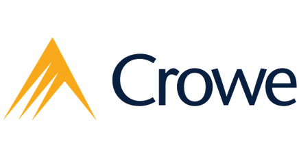

<section class="section">
  <div class="container">
    <h1 class="title">Work Experience</h1>

    <div class="card">
      <header class="card-header">
        <h2 class="card-header-title is-size-4 has-text-weight-medium">
          Kodiak Solutions
        </h2>

        
      </header>
      <div class="card-content">
        <div class="content">
          <div class="is-hidden-mobile">
            <div style="display: flex; justify-content: space-between">
              <span class="has-text-weight-bold">Senior Software Engineer</span>
              <span>July 2024 - Present</span>
            </div>
            <div style="display: flex; justify-content: space-between">
              <span class="has-text-weight-bold">Software Engineer</span>
              <span>May 2022 - July 2024</span>
            </div>
          </div>
          <div class="is-hidden-tablet">
            <p>
              <strong>Senior Software Engineer</strong><br />July 2024 - Present
            </p>
            <p><strong>Software Engineer</strong><br />May 2022 - July 2024</p>
          </div>

          <ul>
            <li>
              Core member of platform level development team which led efforts
              improving firm code practices
            </li>
            <li>
              Produced solution with Angular module federation micro-frontend
              and C# event sourcing micro-service backend
            </li>
            <li>
              Built micro-service API to dynamically service micro-frontend
              configurations to user based on permissions, and allow for new
              micro-frontends to be easily added to the platform
            </li>
            <li>
              Automated build/release note creation and publication to wiki
              through CICD
            </li>
          </ul>
          <p>Kodiak Solutions was divested from Crowe October 2023.</p>
        </div>
      </div>
    </div>
    <div class="card mt-5">
      <header class="card-header">
        <h2 class="card-header-title is-size-4 has-text-weight-medium">
          Crowe
        </h2>

        
      </header>
      <div class="card-content">
        <div class="content">
          <div class="is-hidden-mobile">
            <div style="display: flex; justify-content: space-between">
              <span class="has-text-weight-bold">IT Assurance Staff</span>
              <span>Aug 2021 - May 2022</span>
            </div>
          </div>
          <div class="is-hidden-tablet">
            <p><strong>IT Assurance Staff</strong><br />Aug 2021 - May 2022</p>
          </div>
          <ul>
            <li>
              Conducted audits for SOC reports, HITRUST certifications, and PCI
              compliance
            </li>
            <li>
              Focused technical knowledge onto client technical requirements
              (backup schedules, network configurations, database access, etc.)
            </li>
            <li>
              Developed Bash and PowerShell scripts to automate evidence
              gathering of client system configurations, saving hours of audit
              time
            </li>
          </ul>
        </div>
      </div>
    </div>
  </div>
</section>
